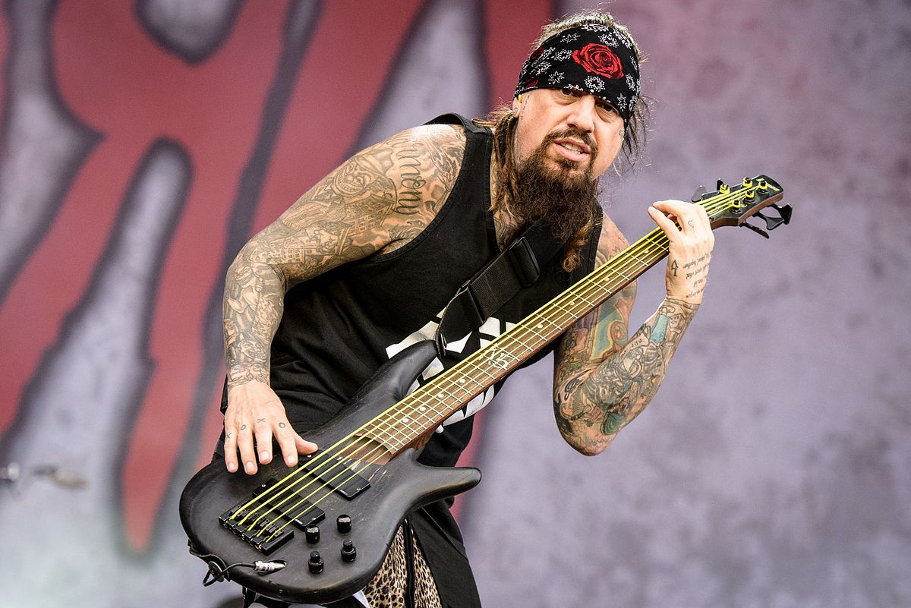
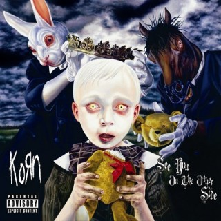

Conteúdo
História da Banda (fonte: Wikipédia)

Korn é uma banda de nu metal de Bakersfield, Califórnia, que atualmente está com a gravadora Prospect Park.
Os Korn tem as suas origens no começo dos anos 1990, mais concretamente em 1992, em Bakersfield, uma pequena
cidade árida ao oeste do "Vale da Morte (Death Valley)".
A banda esteve no Brasil cinco vezes, a primeira em 2002, ainda divulgando o álbum Issues em uma turnê pela América Latina.
Integrantes:
| Foto | Nome | Data de Nascimento | Instrumento | Jonathan Davis | 18/01/1971 | Vocalista, Gaita |  |
James Shaffer | 06/06/1970 | Guitarra | Brian Welch | 19/06/1970 | Guitarra, Vocal de apoio |  | Reginald Arvizu | 02/11/1969 | Baixo | Ray Luzier | 14/06/1970 | Bateria |
|---|
Discografia:
| Capa | Nome | Ano de Lançamento | Take a Look in the Mirror | 2003 |  | See you on the other side | 2005 | Remember who you are | 2010 | The Path of Totality | 2011 |
|---|